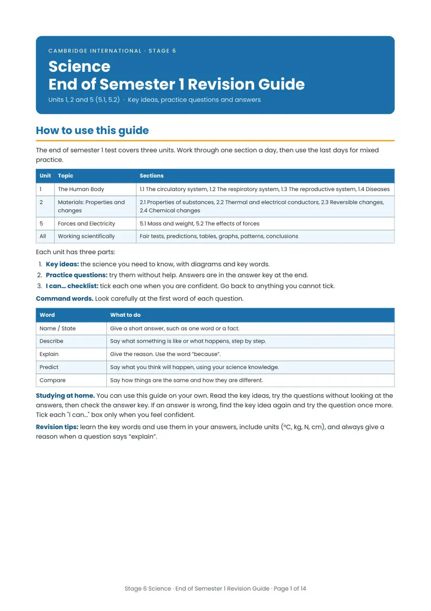
C A M B R I D G E I N T E R N A T I O N A L · S T A G E 6
Science
End of Semester 1 Revision Guide
Units 1, 2 and 5 (5.1, 5.2) · Key ideas, practice questions and answers
How to use this guide
The end of semester 1 test covers three units. Work through one section a day, then use the last days for mixed
practice.
Unit
Topic
Sections
1
The Human Body
1.1 The circulatory system, 1.2 The respiratory system, 1.3 The reproductive system, 1.4 Diseases
2
Materials: Properties and
2.1 Properties of substances, 2.2 Thermal and electrical conductors, 2.3 Reversible changes,
changes
2.4 Chemical changes
5
Forces and Electricity
5.1 Mass and weight, 5.2 The effects of forces
All
Working scientifically
Fair tests, predictions, tables, graphs, patterns, conclusions
Each unit has three parts:
1. Key ideas: the science you need to know, with diagrams and key words.
2. Practice questions: try them without help. Answers are in the answer key at the end.
3. I can… checklist: tick each one when you are confident. Go back to anything you cannot tick.
Command words. Look carefully at the first word of each question.
Word
What to do
Name / State
Give a short answer, such as one word or a fact.
Describe
Say what something is like or what happens, step by step.
Explain
Give the reason. Use the word “because”.
Predict
Say what you think will happen, using your science knowledge.
Compare
Say how things are the same and how they are different.
Studying at home. You can use this guide on your own. Read the key ideas, try the questions without looking at the
answers, then check the answer key. If an answer is wrong, find the key idea again and try the question once more.
Tick each "I can…" box only when you feel confident.
Revision tips: learn the key words and use them in your answers, include units (°C, kg, N, cm), and always give a
reason when a question says “explain”.
Stage 6 Science · End of Semester 1 Revision Guide · Page 1 of 14
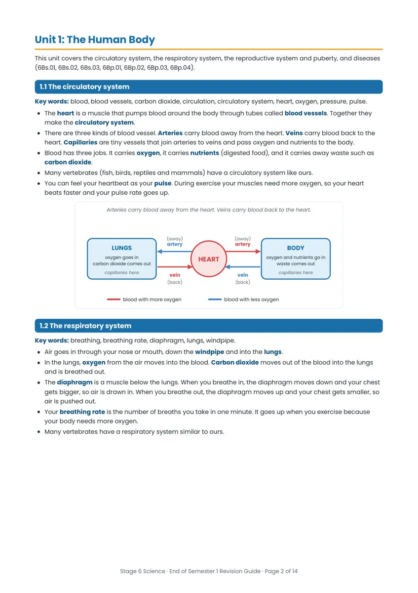
Unit 1: The Human Body
This unit covers the circulatory system, the respiratory system, the reproductive system and puberty, and diseases
(6Bs.01, 6Bs.02, 6Bs.03, 6Bp.01, 6Bp.02, 6Bp.03, 6Bp.04).
1.1 The circulatory system
Key words: blood, blood vessels, carbon dioxide, circulation, circulatory system, heart, oxygen, pressure, pulse.
The heart is a muscle that pumps blood around the body through tubes called blood vessels. Together they
make the circulatory system.
There are three kinds of blood vessel. Arteries carry blood away from the heart. Veins carry blood back to the
heart. Capillaries are tiny vessels that join arteries to veins and pass oxygen and nutrients to the body.
Blood has three jobs. It carries oxygen, it carries nutrients (digested food), and it carries away waste such as
carbon dioxide.
Many vertebrates (fish, birds, reptiles and mammals) have a circulatory system like ours.
You can feel your heartbeat as your pulse. During exercise your muscles need more oxygen, so your heart
beats faster and your pulse rate goes up.
Arteries carry blood away from the heart. Veins carry blood back to the heart.
(away)
(away)
artery
artery
LUNGS
BODY
oxygen goes in
carbon dioxide comes out
oxygen and nutrients go in
HEART
waste comes out
capillaries here
capillaries here
vein
vein
(back)
(back)
blood with more oxygen
blood with less oxygen
1.2 The respiratory system
Key words: breathing, breathing rate, diaphragm, lungs, windpipe.
Air goes in through your nose or mouth, down the windpipe and into the lungs.
In the lungs, oxygen from the air moves into the blood. Carbon dioxide moves out of the blood into the lungs
and is breathed out.
The diaphragm is a muscle below the lungs. When you breathe in, the diaphragm moves down and your chest
gets bigger, so air is drawn in. When you breathe out, the diaphragm moves up and your chest gets smaller, so
air is pushed out.
Your breathing rate is the number of breaths you take in one minute. It goes up when you exercise because
your body needs more oxygen.
Many vertebrates have a respiratory system similar to ours.
Stage 6 Science · End of Semester 1 Revision Guide · Page 2 of 14
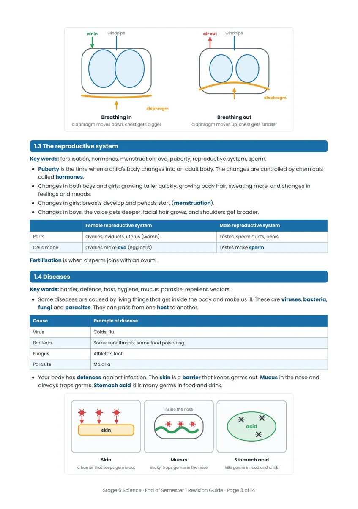
windpipe
windpipe
air in
air out
diaphragm
diaphragm
Breathing in
diaphragm moves down, chest gets bigger
1.3 The reproductive system
Key words: fertilisation, hormones, menstruation, ova, puberty, reproductive system, sperm.
Puberty is the time when a child's body changes into an adult body. The changes are controlled by chemicals
called hormones.
Changes in both boys and girls: growing taller quickly, growing body hair, sweating more, and changes in
feelings and moods.
Changes in girls: breasts develop and periods start (menstruation).
Changes in boys: the voice gets deeper, facial hair grows, and shoulders get broader.
Female reproductive system
Male reproductive system
Parts
Ovaries, oviducts, uterus (womb)
Testes, sperm ducts, penis
Cells made
Ovaries make ova (egg cells)
Testes make sperm
Fertilisation is when a sperm joins with an ovum.
1.4 Diseases
Key words: barrier, defence, host, hygiene, mucus, parasite, repellent, vectors.
Some diseases are caused by living things that get inside the body and make us ill. These are viruses, bacteria,
fungi and parasites. They can pass from one host to another.
Cause
Example of disease
Virus
Colds, flu
Bacteria
Some sore throats, some food poisoning
Fungus
Athlete's foot
Parasite
Malaria
Your body has defences against infection. The skin is a barrier that keeps germs out. Mucus in the nose and
airways traps germs. Stomach acid kills many germs in food and drink.
Breathing out
diaphragm moves up, chest gets smaller
inside the nose
acid
skin
Skin
Mucus
Stomach acid
a barrier that keeps germs out
sticky, traps germs in the nose
kills germs in food and drink
Stage 6 Science · End of Semester 1 Revision Guide · Page 3 of 14
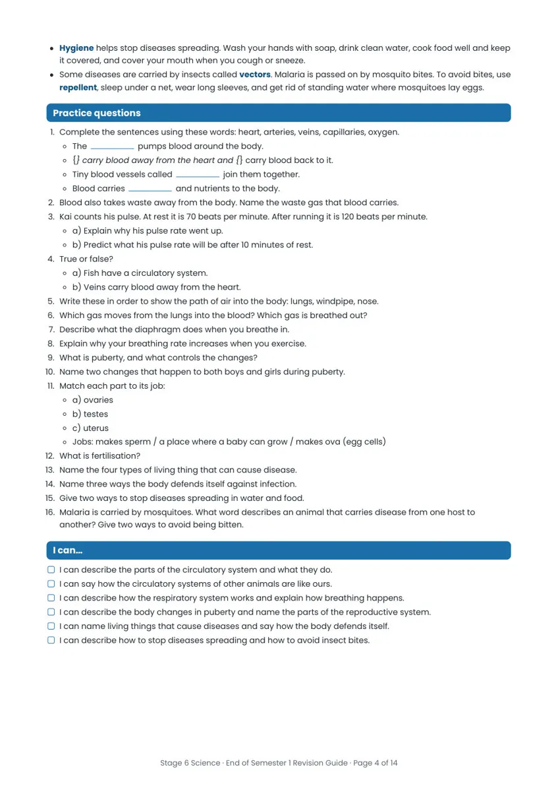
Hygiene helps stop diseases spreading. Wash your hands with soap, drink clean water, cook food well and keep
it covered, and cover your mouth when you cough or sneeze.
Some diseases are carried by insects called vectors. Malaria is passed on by mosquito bites. To avoid bites, use
repellent, sleep under a net, wear long sleeves, and get rid of standing water where mosquitoes lay eggs.
Practice questions
1. Complete the sentences using these words: heart, arteries, veins, capillaries, oxygen.
The
pumps blood around the body.
{} carry blood away from the heart and {} carry blood back to it.
Tiny blood vessels called
join them together.
Blood carries
and nutrients to the body.
2. Blood also takes waste away from the body. Name the waste gas that blood carries.
3. Kai counts his pulse. At rest it is 70 beats per minute. After running it is 120 beats per minute.
a) Explain why his pulse rate went up.
b) Predict what his pulse rate will be after 10 minutes of rest.
4. True or false?
a) Fish have a circulatory system.
b) Veins carry blood away from the heart.
5. Write these in order to show the path of air into the body: lungs, windpipe, nose.
6. Which gas moves from the lungs into the blood? Which gas is breathed out?
7. Describe what the diaphragm does when you breathe in.
8. Explain why your breathing rate increases when you exercise.
9. What is puberty, and what controls the changes?
10. Name two changes that happen to both boys and girls during puberty.
11. Match each part to its job:
a) ovaries
b) testes
c) uterus
Jobs: makes sperm / a place where a baby can grow / makes ova (egg cells)
12. What is fertilisation?
13. Name the four types of living thing that can cause disease.
14. Name three ways the body defends itself against infection.
15. Give two ways to stop diseases spreading in water and food.
16. Malaria is carried by mosquitoes. What word describes an animal that carries disease from one host to
another? Give two ways to avoid being bitten.
I can…
I can describe the parts of the circulatory system and what they do.
I can say how the circulatory systems of other animals are like ours.
I can describe how the respiratory system works and explain how breathing happens.
I can describe the body changes in puberty and name the parts of the reproductive system.
I can name living things that cause diseases and say how the body defends itself.
I can describe how to stop diseases spreading and how to avoid insect bites.
Stage 6 Science · End of Semester 1 Revision Guide · Page 4 of 14
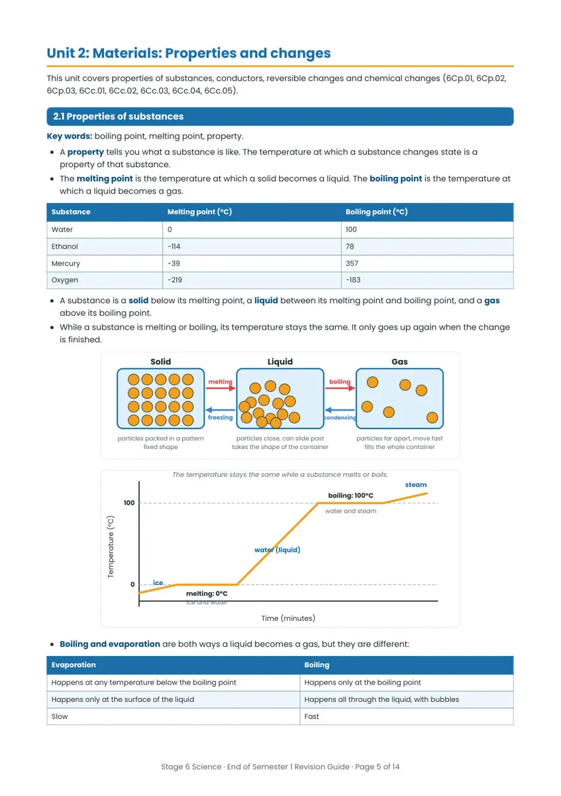
Unit 2: Materials: Properties and changes
This unit covers properties of substances, conductors, reversible changes and chemical changes (6Cp.01, 6Cp.02,
6Cp.03, 6Cc.01, 6Cc.02, 6Cc.03, 6Cc.04, 6Cc.05).
2.1 Properties of substances
Key words: boiling point, melting point, property.
A property tells you what a substance is like. The temperature at which a substance changes state is a
property of that substance.
The melting point is the temperature at which a solid becomes a liquid. The boiling point is the temperature at
which a liquid becomes a gas.
Substance
Melting point (°C)
Boiling point (°C)
Water
0
100
Ethanol
−114
78
Mercury
−39
357
Oxygen
−219
−183
A substance is a solid below its melting point, a liquid between its melting point and boiling point, and a gas
above its boiling point.
While a substance is melting or boiling, its temperature stays the same. It only goes up again when the change
is finished.
Solid
Liquid
Gas
melting
boiling
freezing
condensing
particles packed in a pattern
fixed shape
particles close, can slide past
takes the shape of the container
The temperature stays the same while a substance melts or boils.
boiling: 100°C
water and steam
particles far apart, move fast
fills the whole container
steam
100
Temperature (°C)
water (liquid)
ice
0
melting: 0°C
ice and water
Time (minutes)
Boiling and evaporation are both ways a liquid becomes a gas, but they are different:
Evaporation
Boiling
Happens at any temperature below the boiling point
Happens only at the boiling point
Happens only at the surface of the liquid
Happens all through the liquid, with bubbles
Slow
Fast
Stage 6 Science · End of Semester 1 Revision Guide · Page 5 of 14
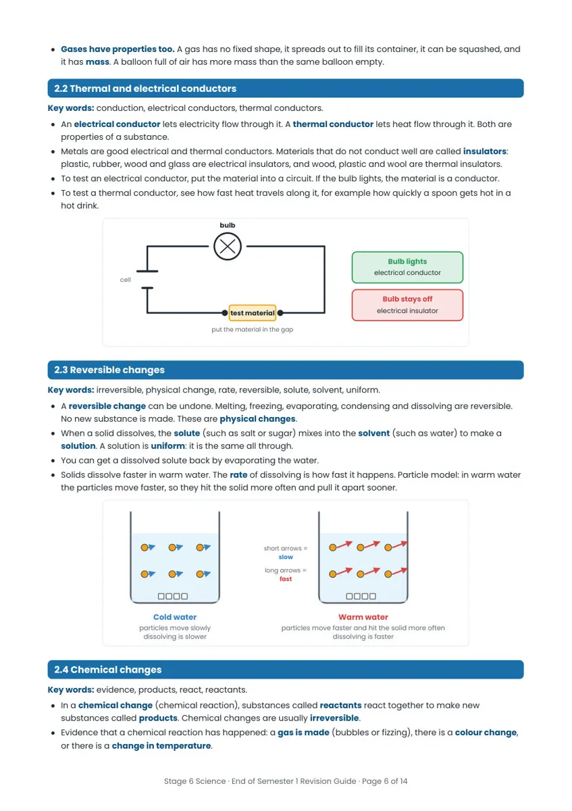
Gases have properties too. A gas has no fixed shape, it spreads out to fill its container, it can be squashed, and
it has mass. A balloon full of air has more mass than the same balloon empty.
2.2 Thermal and electrical conductors
Key words: conduction, electrical conductors, thermal conductors.
An electrical conductor lets electricity flow through it. A thermal conductor lets heat flow through it. Both are
properties of a substance.
Metals are good electrical and thermal conductors. Materials that do not conduct well are called insulators:
plastic, rubber, wood and glass are electrical insulators, and wood, plastic and wool are thermal insulators.
To test an electrical conductor, put the material into a circuit. If the bulb lights, the material is a conductor.
To test a thermal conductor, see how fast heat travels along it, for example how quickly a spoon gets hot in a
hot drink.
bulb
Bulb lights
electrical conductor
Bulb stays off
electrical insulator
cell
test material
put the material in the gap
2.3 Reversible changes
Key words: irreversible, physical change, rate, reversible, solute, solvent, uniform.
A reversible change can be undone. Melting, freezing, evaporating, condensing and dissolving are reversible.
No new substance is made. These are physical changes.
When a solid dissolves, the solute (such as salt or sugar) mixes into the solvent (such as water) to make a
solution. A solution is uniform: it is the same all through.
You can get a dissolved solute back by evaporating the water.
Solids dissolve faster in warm water. The rate of dissolving is how fast it happens. Particle model: in warm water
the particles move faster, so they hit the solid more often and pull it apart sooner.
short arrows =
slow
long arrows =
fast
Cold water
particles move slowly
dissolving is slower
Warm water
particles move faster and hit the solid more often
dissolving is faster
2.4 Chemical changes
Key words: evidence, products, react, reactants.
In a chemical change (chemical reaction), substances called reactants react together to make new
substances called products. Chemical changes are usually irreversible.
Evidence that a chemical reaction has happened: a gas is made (bubbles or fizzing), there is a colour change,
or there is a change in temperature.
Stage 6 Science · End of Semester 1 Revision Guide · Page 6 of 14
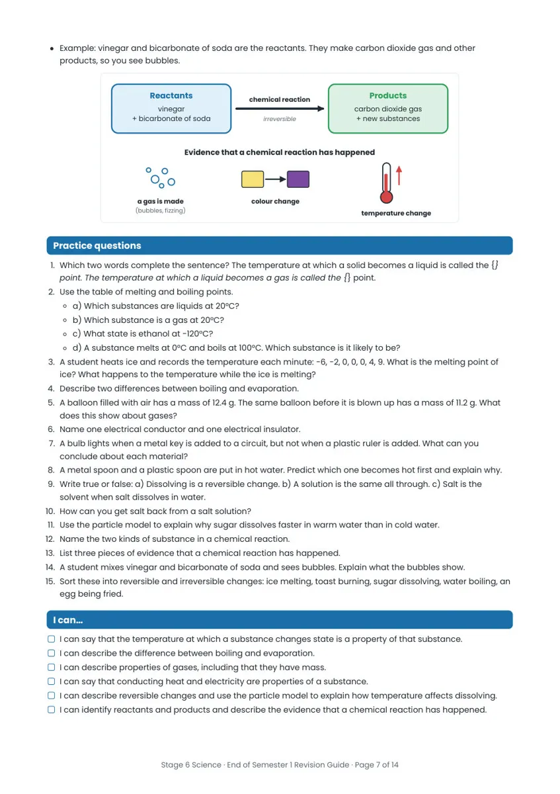
Example: vinegar and bicarbonate of soda are the reactants. They make carbon dioxide gas and other
products, so you see bubbles.
Reactants
vinegar
+ bicarbonate of soda
Products
carbon dioxide gas
+ new substances
chemical reaction
irreversible
Evidence that a chemical reaction has happened
a gas is made
(bubbles, fizzing)
colour change
temperature change
Practice questions
1. Which two words complete the sentence? The temperature at which a solid becomes a liquid is called the {}
point. The temperature at which a liquid becomes a gas is called the {} point.
2. Use the table of melting and boiling points.
a) Which substances are liquids at 20°C?
b) Which substance is a gas at 20°C?
c) What state is ethanol at −120°C?
d) A substance melts at 0°C and boils at 100°C. Which substance is it likely to be?
3. A student heats ice and records the temperature each minute: −6, −2, 0, 0, 0, 4, 9. What is the melting point of
ice? What happens to the temperature while the ice is melting?
4. Describe two differences between boiling and evaporation.
5. A balloon filled with air has a mass of 12.4 g. The same balloon before it is blown up has a mass of 11.2 g. What
does this show about gases?
6. Name one electrical conductor and one electrical insulator.
7. A bulb lights when a metal key is added to a circuit, but not when a plastic ruler is added. What can you
conclude about each material?
8. A metal spoon and a plastic spoon are put in hot water. Predict which one becomes hot first and explain why.
9. Write true or false: a) Dissolving is a reversible change. b) A solution is the same all through. c) Salt is the
solvent when salt dissolves in water.
10. How can you get salt back from a salt solution?
11. Use the particle model to explain why sugar dissolves faster in warm water than in cold water.
12. Name the two kinds of substance in a chemical reaction.
13. List three pieces of evidence that a chemical reaction has happened.
14. A student mixes vinegar and bicarbonate of soda and sees bubbles. Explain what the bubbles show.
15. Sort these into reversible and irreversible changes: ice melting, toast burning, sugar dissolving, water boiling, an
egg being fried.
I can…
I can say that the temperature at which a substance changes state is a property of that substance.
I can describe the difference between boiling and evaporation.
I can describe properties of gases, including that they have mass.
I can say that conducting heat and electricity are properties of a substance.
I can describe reversible changes and use the particle model to explain how temperature affects dissolving.
I can identify reactants and products and describe the evidence that a chemical reaction has happened.
Stage 6 Science · End of Semester 1 Revision Guide · Page 7 of 14
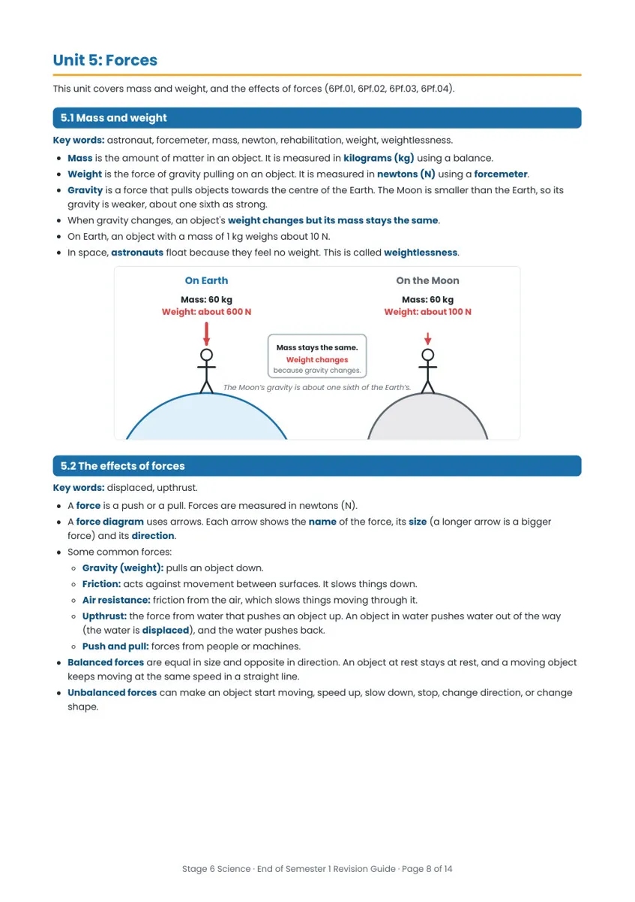
Unit 5: Forces
This unit covers mass and weight, and the effects of forces (6Pf.01, 6Pf.02, 6Pf.03, 6Pf.04).
5.1 Mass and weight
Key words: astronaut, forcemeter, mass, newton, rehabilitation, weight, weightlessness.
Mass is the amount of matter in an object. It is measured in kilograms (kg) using a balance.
Weight is the force of gravity pulling on an object. It is measured in newtons (N) using a forcemeter.
Gravity is a force that pulls objects towards the centre of the Earth. The Moon is smaller than the Earth, so its
gravity is weaker, about one sixth as strong.
When gravity changes, an object's weight changes but its mass stays the same.
On Earth, an object with a mass of 1 kg weighs about 10 N.
In space, astronauts float because they feel no weight. This is called weightlessness.
On Earth
On the Moon
Mass: 60 kg
Weight: about 600 N
Mass: 60 kg
Weight: about 100 N
Mass stays the same.
Weight changes
because gravity changes.
The Moon’s gravity is about one sixth of the Earth’s.
5.2 The effects of forces
Key words: displaced, upthrust.
A force is a push or a pull. Forces are measured in newtons (N).
A force diagram uses arrows. Each arrow shows the name of the force, its size (a longer arrow is a bigger
force) and its direction.
Some common forces:
Gravity (weight): pulls an object down.
Friction: acts against movement between surfaces. It slows things down.
Air resistance: friction from the air, which slows things moving through it.
Upthrust: the force from water that pushes an object up. An object in water pushes water out of the way
(the water is displaced), and the water pushes back.
Push and pull: forces from people or machines.
Balanced forces are equal in size and opposite in direction. An object at rest stays at rest, and a moving object
keeps moving at the same speed in a straight line.
Unbalanced forces can make an object start moving, speed up, slow down, stop, change direction, or change
shape.
Stage 6 Science · End of Semester 1 Revision Guide · Page 8 of 14
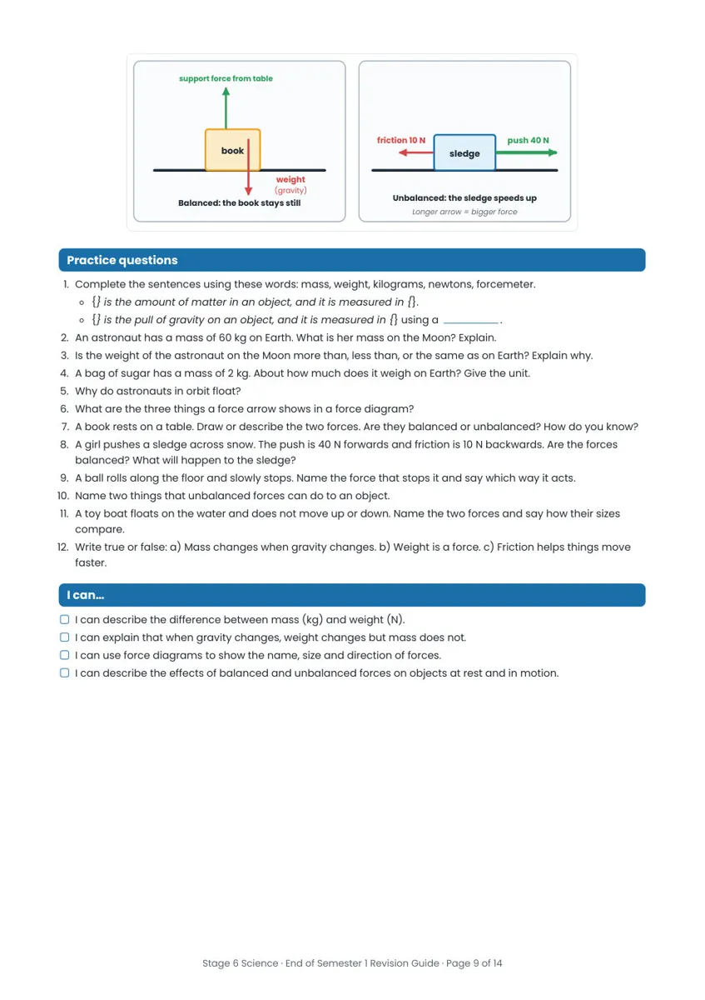
support force from table
friction 10 N
push 40 N
sledge
Unbalanced: the sledge speeds up
Longer arrow = bigger force
book
weight
(gravity)
Balanced: the book stays still
Practice questions
1. Complete the sentences using these words: mass, weight, kilograms, newtons, forcemeter.
{} is the amount of matter in an object, and it is measured in {}.
{} is the pull of gravity on an object, and it is measured in {} using a
.
2. An astronaut has a mass of 60 kg on Earth. What is her mass on the Moon? Explain.
3. Is the weight of the astronaut on the Moon more than, less than, or the same as on Earth? Explain why.
4. A bag of sugar has a mass of 2 kg. About how much does it weigh on Earth? Give the unit.
5. Why do astronauts in orbit float?
6. What are the three things a force arrow shows in a force diagram?
7. A book rests on a table. Draw or describe the two forces. Are they balanced or unbalanced? How do you know?
8. A girl pushes a sledge across snow. The push is 40 N forwards and friction is 10 N backwards. Are the forces
balanced? What will happen to the sledge?
9. A ball rolls along the floor and slowly stops. Name the force that stops it and say which way it acts.
10. Name two things that unbalanced forces can do to an object.
11. A toy boat floats on the water and does not move up or down. Name the two forces and say how their sizes
compare.
12. Write true or false: a) Mass changes when gravity changes. b) Weight is a force. c) Friction helps things move
faster.
I can…
I can describe the difference between mass (kg) and weight (N).
I can explain that when gravity changes, weight changes but mass does not.
I can use force diagrams to show the name, size and direction of forces.
I can describe the effects of balanced and unbalanced forces on objects at rest and in motion.
Stage 6 Science · End of Semester 1 Revision Guide · Page 9 of 14
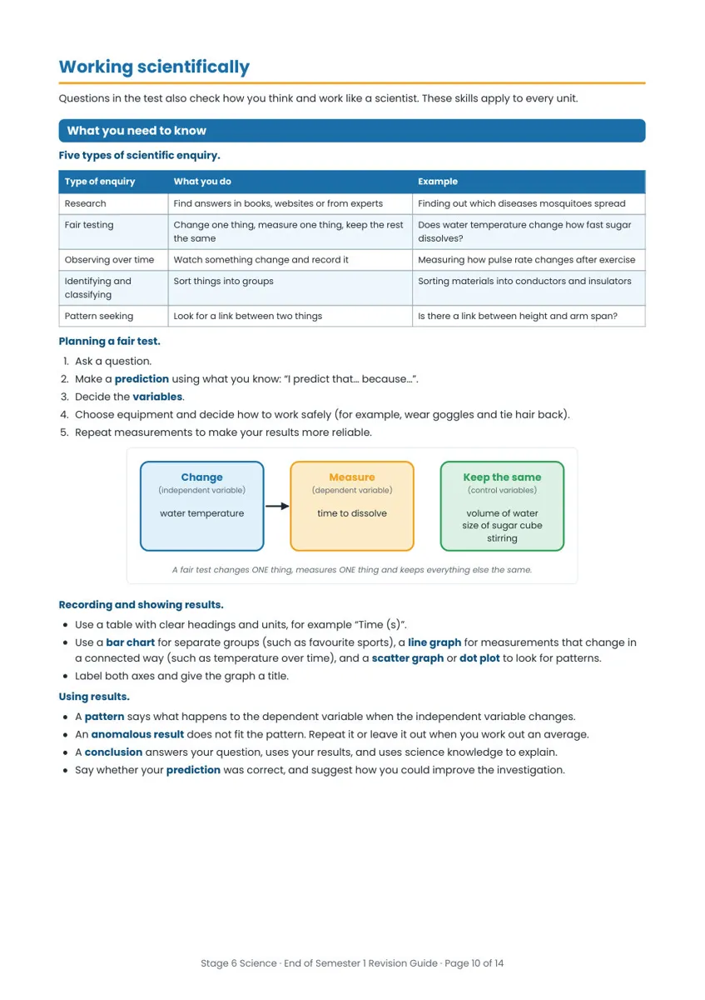
Working scientifically
Questions in the test also check how you think and work like a scientist. These skills apply to every unit.
What you need to know
Five types of scientific enquiry.
Type of enquiry
What you do
Example
Research
Find answers in books, websites or from experts
Finding out which diseases mosquitoes spread
Fair testing
Change one thing, measure one thing, keep the rest
Does water temperature change how fast sugar
the same
dissolves?
Observing over time
Watch something change and record it
Measuring how pulse rate changes after exercise
Identifying and
Sort things into groups
Sorting materials into conductors and insulators
classifying
Pattern seeking
Look for a link between two things
Is there a link between height and arm span?
Planning a fair test.
1. Ask a question.
2. Make a prediction using what you know: “I predict that… because…”.
3. Decide the variables.
4. Choose equipment and decide how to work safely (for example, wear goggles and tie hair back).
5. Repeat measurements to make your results more reliable.
Change
Measure
(independent variable)
(dependent variable)
water temperature
time to dissolve
Keep the same
(control variables)
volume of water
size of sugar cube
stirring
A fair test changes ONE thing, measures ONE thing and keeps everything else the same.
Recording and showing results.
Use a table with clear headings and units, for example “Time (s)”.
Use a bar chart for separate groups (such as favourite sports), a line graph for measurements that change in
a connected way (such as temperature over time), and a scatter graph or dot plot to look for patterns.
Label both axes and give the graph a title.
Using results.
A pattern says what happens to the dependent variable when the independent variable changes.
An anomalous result does not fit the pattern. Repeat it or leave it out when you work out an average.
A conclusion answers your question, uses your results, and uses science knowledge to explain.
Say whether your prediction was correct, and suggest how you could improve the investigation.
Stage 6 Science · End of Semester 1 Revision Guide · Page 10 of 14
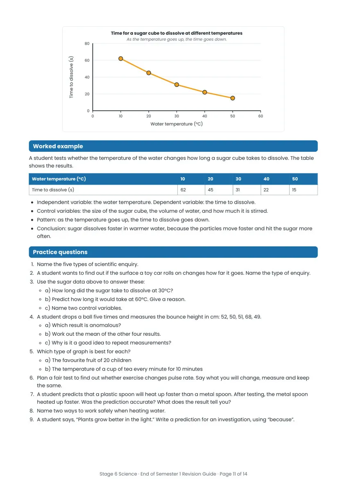
Time for a sugar cube to dissolve at different temperatures
As the temperature goes up, the time goes down.
80
60
40
20
0
Time to dissolve (s)
0
10
20
30
40
50
60
Water temperature (°C)
Worked example
A student tests whether the temperature of the water changes how long a sugar cube takes to dissolve. The table
shows the results.
Water temperature (°C)
10
20
30
40
50
Time to dissolve (s)
62
45
31
22
15
Independent variable: the water temperature. Dependent variable: the time to dissolve.
Control variables: the size of the sugar cube, the volume of water, and how much it is stirred.
Pattern: as the temperature goes up, the time to dissolve goes down.
Conclusion: sugar dissolves faster in warmer water, because the particles move faster and hit the sugar more
often.
Practice questions
1. Name the five types of scientific enquiry.
2. A student wants to find out if the surface a toy car rolls on changes how far it goes. Name the type of enquiry.
3. Use the sugar data above to answer these:
a) How long did the sugar take to dissolve at 30°C?
b) Predict how long it would take at 60°C. Give a reason.
c) Name two control variables.
4. A student drops a ball five times and measures the bounce height in cm: 52, 50, 51, 68, 49.
a) Which result is anomalous?
b) Work out the mean of the other four results.
c) Why is it a good idea to repeat measurements?
5. Which type of graph is best for each?
a) The favourite fruit of 20 children
b) The temperature of a cup of tea every minute for 10 minutes
6. Plan a fair test to find out whether exercise changes pulse rate. Say what you will change, measure and keep
the same.
7. A student predicts that a plastic spoon will heat up faster than a metal spoon. After testing, the metal spoon
heated up faster. Was the prediction accurate? What does the result tell you?
8. Name two ways to work safely when heating water.
9. A student says, “Plants grow better in the light.” Write a prediction for an investigation, using “because”.
Stage 6 Science · End of Semester 1 Revision Guide · Page 11 of 14
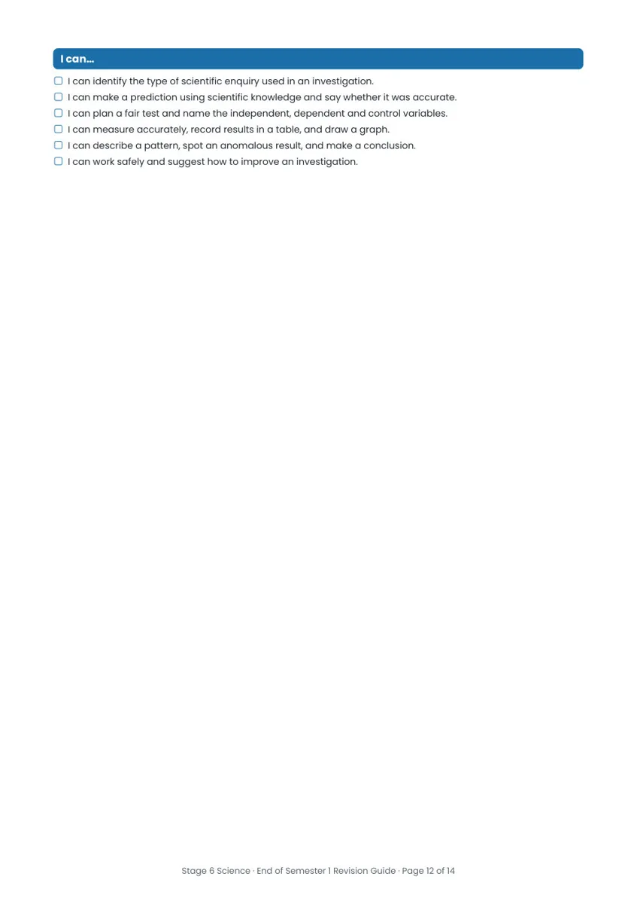
I can…
I can identify the type of scientific enquiry used in an investigation.
I can make a prediction using scientific knowledge and say whether it was accurate.
I can plan a fair test and name the independent, dependent and control variables.
I can measure accurately, record results in a table, and draw a graph.
I can describe a pattern, spot an anomalous result, and make a conclusion.
I can work safely and suggest how to improve an investigation.
Stage 6 Science · End of Semester 1 Revision Guide · Page 12 of 14
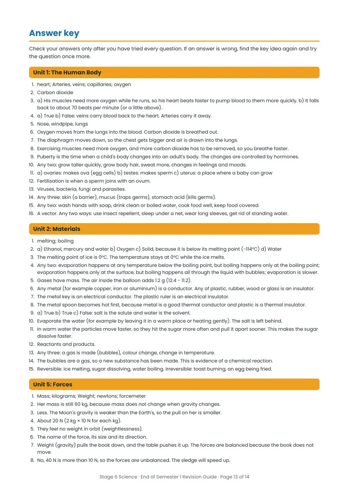
Answer key
Check your answers only after you have tried every question. If an answer is wrong, find the key idea again and try
the question once more.
Unit 1: The Human Body
1. heart; Arteries, veins; capillaries; oxygen
2. Carbon dioxide
3. a) His muscles need more oxygen while he runs, so his heart beats faster to pump blood to them more quickly. b) It falls
back to about 70 beats per minute (or a little above).
4. a) True b) False: veins carry blood back to the heart. Arteries carry it away.
5. Nose, windpipe, lungs
6. Oxygen moves from the lungs into the blood. Carbon dioxide is breathed out.
7. The diaphragm moves down, so the chest gets bigger and air is drawn into the lungs.
8. Exercising muscles need more oxygen, and more carbon dioxide has to be removed, so you breathe faster.
9. Puberty is the time when a child's body changes into an adult's body. The changes are controlled by hormones.
10. Any two: grow taller quickly, grow body hair, sweat more, changes in feelings and moods.
11. a) ovaries: makes ova (egg cells) b) testes: makes sperm c) uterus: a place where a baby can grow
12. Fertilisation is when a sperm joins with an ovum.
13. Viruses, bacteria, fungi and parasites.
14. Any three: skin (a barrier), mucus (traps germs), stomach acid (kills germs).
15. Any two: wash hands with soap, drink clean or boiled water, cook food well, keep food covered.
16. A vector. Any two ways: use insect repellent, sleep under a net, wear long sleeves, get rid of standing water.
Unit 2: Materials
1. melting; boiling
2. a) Ethanol, mercury and water b) Oxygen c) Solid, because it is below its melting point (−114°C) d) Water
3. The melting point of ice is 0°C. The temperature stays at 0°C while the ice melts.
4. Any two: evaporation happens at any temperature below the boiling point, but boiling happens only at the boiling point;
evaporation happens only at the surface, but boiling happens all through the liquid with bubbles; evaporation is slower.
5. Gases have mass. The air inside the balloon adds 1.2 g (12.4 − 11.2).
6. Any metal (for example copper, iron or aluminium) is a conductor. Any of plastic, rubber, wood or glass is an insulator.
7. The metal key is an electrical conductor. The plastic ruler is an electrical insulator.
8. The metal spoon becomes hot first, because metal is a good thermal conductor and plastic is a thermal insulator.
9. a) True b) True c) False: salt is the solute and water is the solvent.
10. Evaporate the water (for example by leaving it in a warm place or heating gently). The salt is left behind.
11. In warm water the particles move faster, so they hit the sugar more often and pull it apart sooner. This makes the sugar
dissolve faster.
12. Reactants and products.
13. Any three: a gas is made (bubbles), colour change, change in temperature.
14. The bubbles are a gas, so a new substance has been made. This is evidence of a chemical reaction.
15. Reversible: ice melting, sugar dissolving, water boiling. Irreversible: toast burning, an egg being fried.
Unit 5: Forces
1. Mass; kilograms; Weight; newtons; forcemeter
2. Her mass is still 60 kg, because mass does not change when gravity changes.
3. Less. The Moon's gravity is weaker than the Earth's, so the pull on her is smaller.
4. About 20 N (2 kg × 10 N for each kg).
5. They feel no weight in orbit (weightlessness).
6. The name of the force, its size and its direction.
7. Weight (gravity) pulls the book down, and the table pushes it up. The forces are balanced because the book does not
move.
8. No, 40 N is more than 10 N, so the forces are unbalanced. The sledge will speed up.
Stage 6 Science · End of Semester 1 Revision Guide · Page 13 of 14
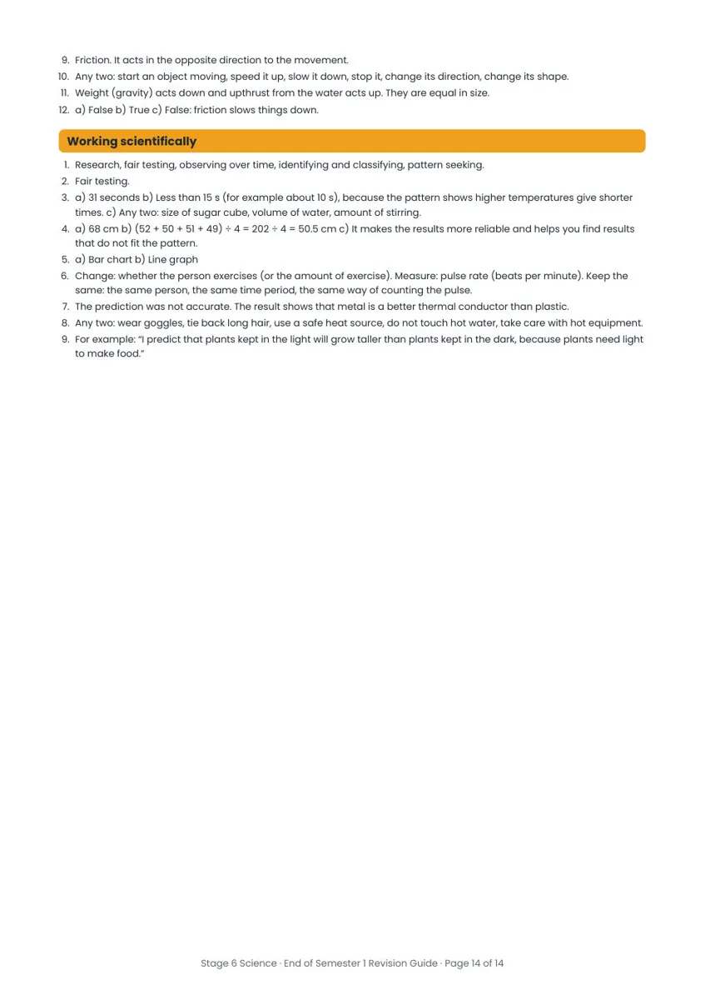
9. Friction. It acts in the opposite direction to the movement.
10. Any two: start an object moving, speed it up, slow it down, stop it, change its direction, change its shape.
11. Weight (gravity) acts down and upthrust from the water acts up. They are equal in size.
12. a) False b) True c) False: friction slows things down.
Working scientifically
1. Research, fair testing, observing over time, identifying and classifying, pattern seeking.
2. Fair testing.
3. a) 31 seconds b) Less than 15 s (for example about 10 s), because the pattern shows higher temperatures give shorter
times. c) Any two: size of sugar cube, volume of water, amount of stirring.
4. a) 68 cm b) (52 + 50 + 51 + 49) ÷ 4 = 202 ÷ 4 = 50.5 cm c) It makes the results more reliable and helps you find results
that do not fit the pattern.
5. a) Bar chart b) Line graph
6. Change: whether the person exercises (or the amount of exercise). Measure: pulse rate (beats per minute). Keep the
same: the same person, the same time period, the same way of counting the pulse.
7. The prediction was not accurate. The result shows that metal is a better thermal conductor than plastic.
8. Any two: wear goggles, tie back long hair, use a safe heat source, do not touch hot water, take care with hot equipment.
9. For example: “I predict that plants kept in the light will grow taller than plants kept in the dark, because plants need light
to make food.”
Stage 6 Science · End of Semester 1 Revision Guide · Page 14 of 14